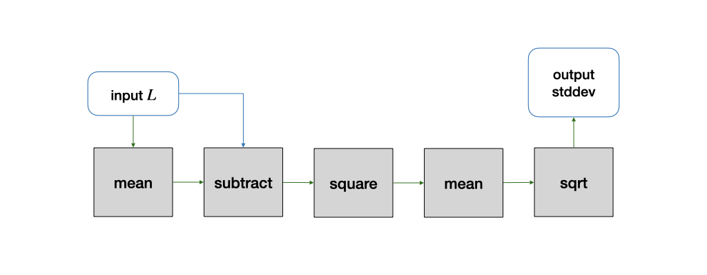
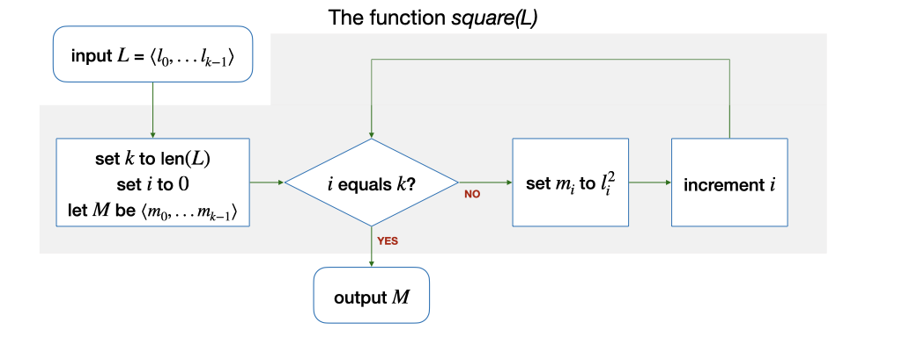
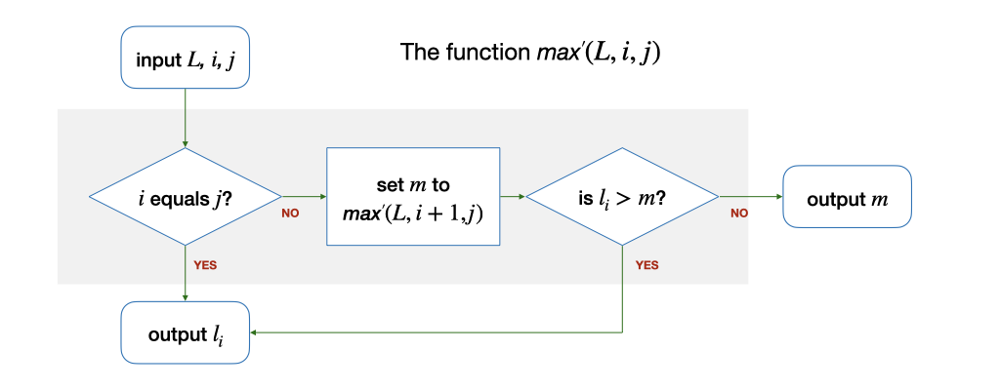
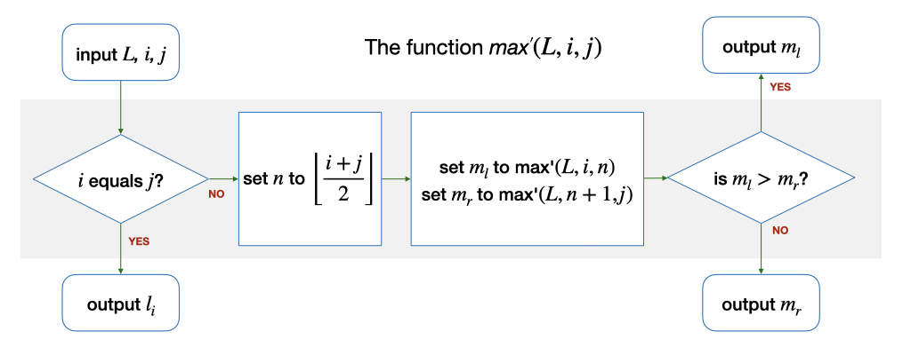
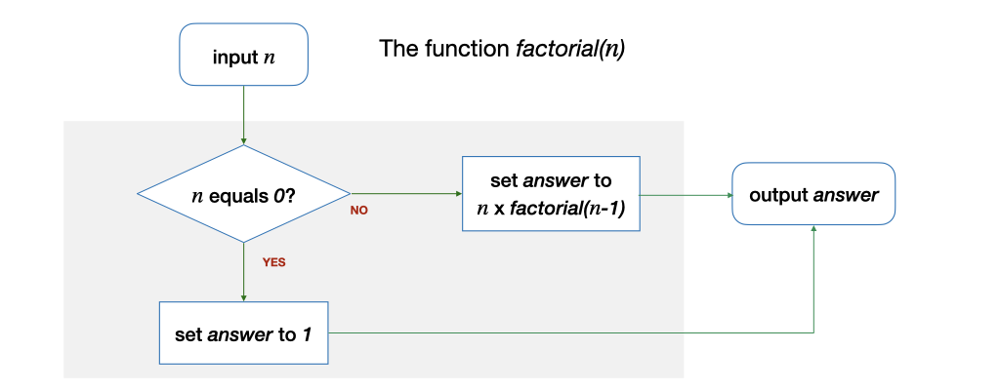

Unit 3: Functions
Learning Outcomes:
After this unit, students should:
- understand the concept of a function: (i) function as a high-level abstraction of lower-level operations; (ii) function as a well-defined solution to a sub-problem with zero or more inputs and (possibly) a returned value.
- be able to see how a problem can be decomposed into sub-problems, each solvable by a function; the functions can then be composed together to solve the original problem;
- understand the concept of local variables that are internal within a function;
- be able to apply "wishful thinking" in decomposing a problem into sub-problems;
- apply wishful thinking in solving a problem recursively -- by making a function invokes itself to solve a simpler version of the same problem.
Problem: Finding the Range
Let's start with another problem.
The range of a finite list of at least one integer \(L\) is defined as the difference between the maximum and the minimum integers in \(L\). For example, the range for 4 1 -4 0 9 9 3 5 8 is 13. How do we find the range of a given list?
To find the range of a list, we can break the solution down into three subtasks: first, find the maximum, then, find the minimum, and finally, find the difference between the maximum and the minimum.
From the previous lecture, you already know how to find the maximum and the minimum (from Problem 2.2). So, in expressing the algorithm to find the range, we can refer to a previous solution to a sub-problem, which we assume we already know how to solve.
Let's call our solution to find the maximum value from a given list \(L\) as \(max\). \(max\) takes as input (i) a list \(L\) and (ii) \(k\), the number of integers in \(L\). It produces, or returns, the maximum value among the integers in \(L\). Borrowing from mathematical notation, we use the notation \(max(L, k)\) to represent the maximum value of \(L\). Note that, now, we no longer worry about \(i\) and \(m\) -- these two variables are now internal, or local, to \(max(L,k)\).
Suppose that \(min(L,k)\) returns the minimum value among the integers in \(L\), then, the algorithm to find the range of \(L\) can be written in a single line:
Functions
\(max\) and \(min\) are examples of a powerful and important concept with many names: function, procedure, subroutine, method, subprogram1. In the context of CS1010, we will use the term function. Functions allow us to solve a problem by thinking about the solution at a higher level. We are no longer concerned with the implementation details.
For instance, in the example above, we no longer have to think about checking through the items in the list one by one and maintaining the maximum so far or the minimum so far. We just have to think about how to compute the range, assuming that we already know how to compute the maximum and the minimum value.
Such an assumption, that we already know how to solve a subproblem, is known as wishful thinking. Sometimes, it is useful to solve a problem assuming that you know how to solve the subproblem first and worry about solving the subproblem later.
For instance, consider the following problem: Given a finite list of \(k\) integers (\(k > 0\)), find the mean.
The algorithm again can be written in one line:
if we assume that we have a function \(sum\) that can help us find the total of all \(k\) integers. It turns out, in this case, that you should also know how to solve the subproblem \(sum\) from Problem 2.3.
We can then make this into a function itself, \(mean(L, k)\), which we can now use to solve other more complex problems.
Thinking in terms of functions also has another advantage: given a function, we only need to worry about what it does, but not how it is done. In the \(max(L,k)\) example above, we do not care if it scans the list \(L\) from \(l_0\) to \(l_{k-1}\), or from \(l_{k-1}\) to \(l_0\). We can treat a function as a black box with well-defined behavior -- given one or more inputs, it will produce a value satisfying certain conditions, i.e., it solves a computational problem.
Many programming languages, including C which we will be using in CS1010, come with a rich set of predefined functions that we can use to help us solve computational problems. In CS1010, we will also provide you with some functions to help you with your lab assignments. You will also define your own functions when solving problems with C. In fact, a C program is just a collection of functions calling each other.
Note, however, that in C, a function is more general than the description above: a C function may not take in any input, and it may not return any value.
Before we continue, let's simplify the functions we have written so far. Let's suppose that we have another function \(len(L)\) that takes in a list as an input, and returns the number of items in the list. With this function, we can remove \(k\) as one of the inputs to the function \(max\), \(min\), \(sum\) and \(mean\). Instead of defining \(mean(L, k)\) to be \(sum(L, k)/k\), we can define the function to be \(mean(L) = sum(L)/len(L)\). We can define \(k\) to be a local variable within \(max\), \(min\), and \(sum\). We initialize \(k\) before we compute the respective answers.
Problem: Finding Standard Deviation
Let's look at another problem: Given \(L\), a finite list of \(k\) integers (\(k \ge 1\)), find the standard deviation of the integers in \(L\).
First, recall that the (population) standard deviation is given by
where \(\mu\) is the mean of the integers in \(L\).
To compute the standard deviation, we first need to compute \(\mu\), the mean. We already know how to do that: \(mean(L)\). Then, we need to compute \(\sum_{i=0}^{k-1} (l_i - \mu)^2\). We can break it down into two subproblems:
- Given a list \(L\) and a constant value \(x\), subtract \(x\) from every number in \(L\), giving us a new list.
- Given a list, square every number in the list, giving us a new list.
For now, let's apply wishful thinking and assume that we know how to compute the above two steps with functions \(subtract(L, x)\) and \(square(L)\), then, the formula \(\sum_{i=0}^{k-1} (l_i - \mu)^2\) can be computed by the following steps:
- set \(\mu\) to \(mean(L)\)
- set \(L'\) to \(subtract(L, \mu)\)
- set \(L''\) to \(square(L')\)
- set \(total\) to \(sum(L'')\).
We can also write it in one line:
- set \(total\) to \(sum(square(subtract(L, mean(L))))\)
Now, to compute the standard deviation, we need to divide \(total\) by \(len(L)\) and find the square root. But, finding \(total\) and dividing the result by \(len(L)\) is just \(mean\). To compute the square root, we again apply wishful thinking and assume that there is a function \(sqrt\) to do so.
We can now compute the standard deviation with one line:
Using functions, we can easily pass the output from one function as input to another, essentially chaining the functions together, like Lego blocks, to solve problems. We also see an example of reuse here -- \(mean\) is used twice with different inputs.

Returning a list
The above one-liner might seem to be an elegant solution. When we implement this in C later, it will not be so simple and elegant. Particularly, it is not trivial to return a list from a function in C. But, let's worry about that later.
Now that we have seen how to compute standard deviation by breaking it down the four subproblems, \(sqrt\), \(mean\), \(square\), and \(subtract\), we have to make sure that things we wish can be done can actually be done. The C library, and many programming languages, provide a pre-defined method to compute \(sqrt\). We already know how to compute \(mean\). Computing \(square\) can be done as follows:

The implementation of \(subtract\) is similar.
Writing Good Functions
To make the functions that you write reusable and composable, you should create your functions in such a way that it does one thing and one thing only. For instance, consider a different design of the solution above, where we write a function called \(substract_mean(L)\), which both calculates the mean of the items in \(L\) and then subtracts it from every element in \(L\) (doing two things). We could still compute the standard deviation with:
However, we still need another function \(mean\) that duplicates part of what \(subtract_mean\) is doing. Furthermore, suppose we want to subtract a value other than the mean of the elements in the list, then we would need to write another method \(subtract_X\), and we would duplicate part of what \(subtract_mean\) is doing as well. Instead of having the same code that performs the same thing in two different functions, it is better to avoid repeating ourselves1 and write simpler functions that perform only one task.
A second guideline to writing good functions is that your function should take in all the necessary arguments and only the necessary ones. Consider \(mean(L)\) as an example. An earlier design of this function takes in the length \(k\) as well: \(mean(L,k)\). But is \(k\) necessary?
Suppose in our usage of \(mean\), we may not want to compute the mean for all the elements in the list \(L\), but only the mean of the first \(k\) elements. Then, having \(k\) as a input to \(mean\) makes our \(mean\) function more flexible. On the other hand, suppose that we are very sure that \(mean\) will only be called to compute the mean of all the elements in \(L\), and we can derive \(k\) from \(L\), then \(k\) is no longer a necessary input. We can simplify the inputs to \(mean\) from \(mean(L,k)\) to just \(mean(L)\).
Another Two Solutions for Finding Maximum
In the previous lecture, you have seen an algorithm to find the maximum value from a list of integers, which involves checking the elements one by one and keeping track of the maximum value so far.
Now that we have seen what a function is, we can use the concept of wishful thinking to help us solve this problem differently and more elegantly.
Let's suppose that we have a function \(max'(L, i, j)\), that finds the maximum integer among the elements \(l_i, l_{i+1}, ... l_j\). The function \(max(L, k)\), which finds the maximum among all elements of \(L\), is, therefore, the same as \(max'(L, 0, k-1)\).
Do we know how to solve \(max'(L, i, j)\) without checking the integers in \(L\) one by one? Well, if \(i\) equals \(j\), i.e., there is only one element in the range of \(l_i, ..., l_j\), then yes, the function should simply return the value of \(l_i\).
But, what if there are multiple elements in the range? (i.e., \(i < j\))? By wishful thinking, we assume that we already know how to solve smaller (as in a shorter list) problem -- \(max'(L, i+1, j)\), so the maximum value for the range of \(l_i, ..., l_j\) is the larger of the two: either \(l_i\) or \(max'(L, i+1, j)\). We can express this algorithm as follows:

Let's trace through the algorithm above, using our previous example: 4 1 -4 0 9 9 3 5 8. Given this list, we compare the first element, 4, with the maximum of the rest of the list 1 -4 0 9 9 3 5 8, computed with \(max'(L, 1,8)\). With wishful thinking, we know how to solve \(max'\) already -- we get \(max'(L,1,8)\) = 9 as the maximum value of 1 -4 0 9 9 3 5 8. Comparing 4 and 9, 9 is larger. Thus, the maximum of the whole list is 9.
The solution above involves \(max'\) calling itself once to solve the problem. It breaks the problem of finding the maximum in a list of \(k\) items into the problem of finding the maximum in a list of \(k-1\) items.
Now, let's consider a second possibility. What if we break the list into two lists of (roughly) equal length? Let's consider the example 4 1 -4 0 9 9 3 5. We keep the list to eight items this time so that it is neater. We can break the list into two smaller lists: 4 1 -4 0 and 9 9 3 5. By wishful thinking, we know how to find the maximum among 4 1 -4 0 (which is 4) and 9 9 3 5 (which is 9). What remains is just to pick the larger of the two and we have the maximum of the two lists!
Given \(max'(L, i, j)\), if we let \(n = \left\lfloor(i+j)/2\right\rfloor\), then we can solve \(max'(L,i,j)\) by solving two smaller, almost equally sized, sub-problems, \(max'(L,i,n)\) and \(max'(L,n+1,j)\).
We can express this algorithm as follows:

This problem-solving technique is called divide-and-conquer. You will see this technique again many times in CS1010, CS2040C, CS3230, and the rest of your computing career. A nice property of this technique is that, if we have more than one processing unit, we can ask them to compute \(max'(L,i,n)\) and \(max'(L,n+1,j)\) in parallel, and thus getting the answer we are looking for, earlier!
Example: Finding a Factorial
Let us look at another example of a function before we move on to another topic. Suppose we want to write a function \(factorial(n)\) for an integer \(n\) (\(n \ge 0\)) that computes \(n!\). Recall that \(n! = n \times n - 1 \times n - 2 \times ... 2 \times 1 = n \times (n-1)!\). As a special case, \(0!\) is defined to be \(1\).
The algorithm to do this can be expressed by the following diagram:

Let's look at an example. Let's say we want to compute \(factorial(4)\). We assume we know how to solve this for a smaller problem -- \(factorial(3)\), which is 6. \(factorial(4)\) is thus 4 \(\times\) 6, i.e., 24.
Recursion: Function Calling Itself
\(max'\) and \(factorial\) are examples of functions that call themselves to solve a simpler version of the problem. This is known as recursion. We will revisit this concept in much greater detail in the later part of CS1010.
Problem Set
Problem 3.1: Getting MAD
The mean absolute deviation, or MAD, of a set of integers measures how spread out a set of data is. The absolute deviation is the absolute difference between an element in the list with the mean of values of the list. The mean absolute deviation is the mean of all the absolute differences. In other words, given \(L = \{l_0, ... l_{k-1}\}\), the MAD of \(L\) is:
How do you find MAD by composing various functions we have seen? Do you need a new function?
Problem 3.2: Ownself calls ownself
(a) Give an algorithm for finding the sum of all the integers in the list \(L\) with \(k\) (\(k > 0\)) integers that is recursive.
(b) The function \(pow(i, j)\) computes \(i^j\). Give an algorithm to compute \(pow(i, j)\) recursively.